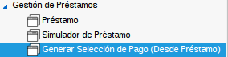
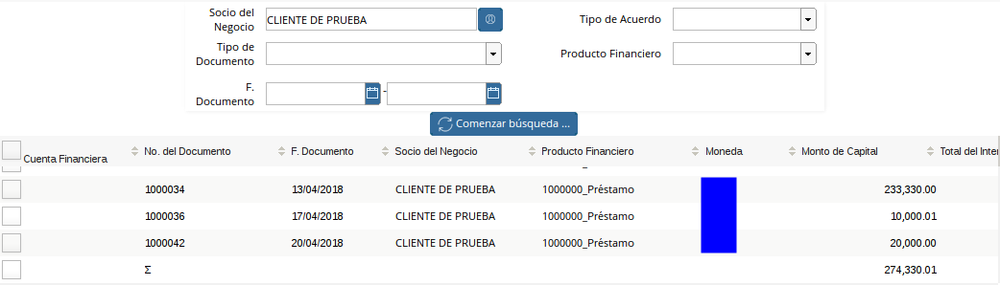
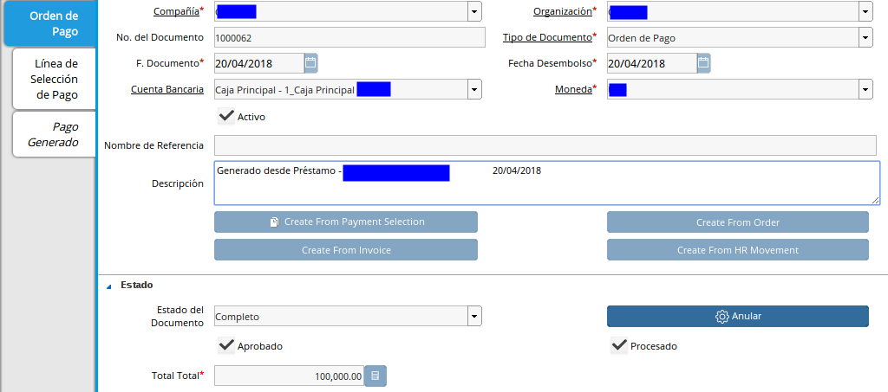
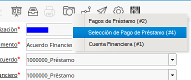

Generar Selección de Pago¶
La selección de pago en ADempiere actúa como una orden de pago, agrupando varios préstamos pendientes por cancelar, la funcionalidad o simplicidad del proceso dependerá de la configuración del documento en la cuenta bancaria o cuenta de caja (Vea Configuración Esencial para el Proceso de Préstamo).
Fué creado un Smart Browser permitiendo al usuario seleccionar múltiples préstamos y generar de manera eficiente y segura un pago o varios pagos discriminando por préstamo si el usuario así lo desea.
Interpretando la Ventana¶
Panel de Parámetros de Consulta de Préstamos: En este panel dispone de los parámetros que serán de filtro para consultar los préstamos pendientes por cancelar.

Imagen 1. Búsqueda de Selección de Pagos
Panel de resultados Para Selección de Préstamos: En este panel seleccionará los préstamos a pagar.

Imagen 2. Resultado de Selección de Pagos
Panel de Datos para Generar la Selección de Pago: En este panel indicará los datos para generar la selección de pago.

Imagen 3. Proceso de Selección de Pagos
Selección de Pago¶
Vaya a la ventana de Préstamo(Adjunto Imagen)

Imagen 4. Menú de Selección de Pagos
A continuación se desplegará la siguiente ventana (Adjunto Imagen)
Imagen 5. Generar Selección de Pagos

Proceda a llenar los Parámetros de Consulta de Préstamos necesarios para generar la selección de pagos:
Socio de Negocio: Filtrará los préstamos pendientes por pagar con el Socio del Negocio indicado.
Tipo de Acuerdo: Filtrará los préstamos pendientes por pagar con el Tipo de Acuerdo indicado.
Tipo de Documento: Filtrará los préstamos pendientes por pagar con el Tipo de Documento indicado.
Producto Financiero: Filtrará los préstamos pendientes por pagar con el Producto Financiero indicado.
F. Documento: Filtrará los préstamos pendientes por pagar en el Rango de fecha indicada.
Si no indica parámetros el sistema buscará todos los préstamos pendientes por pagar.
Seleccione la opción comenzar búsqueda
Imagen 6. Comenzar Búsqueda


A continuación verá los siguientes resultados:

Imagen 7. Resultado de Búsqueda
Seleccione los préstamos que desea cancelar:
Imagen 8. Selección de Préstamo

Proceda a llenar los *Datos para Generar la Selección de Pago*.
Imagen 9. Selección de Préstamo
Cuenta Bancaria: Seleccione la cuenta bancaria ó caja previamente configurada** (Vea Configuraciones Esenciales para el Proceso de Préstamo)** de la cual egresa el dinero del pago del préstamo, si la cuenta seleccionada es una caja o una cuenta bancaria determinará el comportamiento y consulta del pago generado.
Tipo de Documento Destino: Seleccione el tipo de Documento.
Fecha de Desembolso: Indique la fecha en la cual egresa el dinero.
Regla de Pago: Indique la regla de pago.
Dividir Selección de Pago: Esta opción debe ser marcada si desea dividir los pagos por prestamo de lo contrario se generarán el pago consolidado en la seleccion de pago.
Acción de Documento: Indique la acción de documento con la cual desea generar la selección.
Imagen 10. Acción de Documento


Si desea generar la selección de pago seleccione la opción ok  , caso contrario seleccione la opción cancelar
, caso contrario seleccione la opción cancelar 
Si seleccionó la opción OK el sistema generará la(s) selección(es) de forma exitosa generando el siguiente mensaje indicando el número(s) del pago generado.
Imagen 11. Selección de Pagos Generada

Consulta de Selección de Pago de Préstamo¶
Existen dos posibles formas de consultar las selecciones de pago asociadas a un préstamo, a continuación serán explicadas:
Ventana Selección de Pago:¶
Vaya a la ventana de Selección de Pago (Adjunto Imagen)
Imagen 12. Consulta de Selección de Pagos

A continuación se desplegará la siguiente ventana (Adjunto Imagen)

Imagen 13. Selección de Pagos Generada
Busque el registro desde la opción “Encontrar Registro” ubicada en la barra de herramientas.
Imagen 14. Selección de Pagos Generada

A continuación se desplegará el siguiente dialogo
Imagen 15. Selección de Pagos Generada

Ingrese el número de la selección generada en el proceso Generar Selección de Pago.
Ventana de Préstamo:¶
Una vez en la ventana de Préstamo.
Vaya a la opción “Visualiza Detalle(Donde es Usado)” ubicada en la barra de herramientas.
Imagen 16. Selección de Pagos Generada
A continuación se desplegará el siguiente dialogo
Imagen 17. Selección de Pagos Generada

Seleccione la opción “Selección de Pago de Préstamos”

Imagen 18. Selección de Pagos Generada
Esta opción lo llevará automáticamente a las selecciones de pago asociadas a este préstamo.